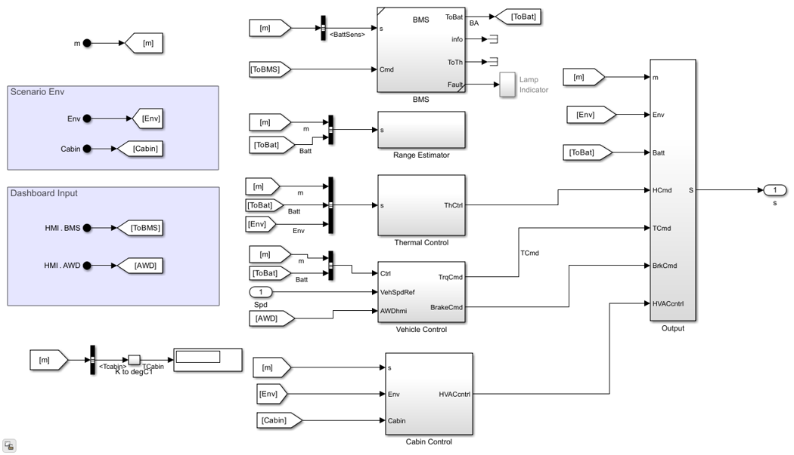

Controller
Full vehicle controller with torque control, motor torque split, and regenerative braking for the BEV system model.
Contents
Overview
The Controller implements torque control with motor torque split between front and rear axles, AWD/FWD mode selection, regenerative braking logic, and drive-cycle speed tracking. This is the default controller used in the electro-thermal vehicle configuration.
Model: Controller.slx
Parameters: ControllerParams.m
Thermal Coupling: No
Open Model

Ports
Inputs
| Port | Type | Description |
|---|---|---|
| Spd | Scalar | Drive cycle speed reference |
| (measurement bus) | Bus | Feedback: m.DV.VehSpd, m.M1.EM.EMrpm, m.M1.EM.coilT, m.BA.CoolTp, BA.BattSens, Env.Tenv, VA.Tcabin |
| BMS | Bus element | BMS sensor signals (faults, limits, SOC) |
| AWD | Bus element | AWD mode flag |
Output Bus — s
| Sub-bus | Key Signals | Description |
|---|---|---|
| DV | BrkCmd | Driveline brake command |
| Battery | RelayPos, RelayNeg | Battery relay commands |
| EM1 | EMtrq, Batt | Front motor torque command |
| EM2 | EMtrq, Batt | Rear motor torque command |
| Charger | Batt | Charger mode signal |
| Radiator | cmdFan, Env, VehSpd | Radiator fan control |
| MotorPump | cmdPump, BatSt | Motor coolant pump |
| BatteryPump | cmdPump, BatSt | Battery coolant pump |
| Heater | cmdHeater, BatSt | Battery heater |
| HVAC | Env, Batt, Cntrl | HVAC cabin commands |
| ChillerValve | cmdChillerByp | Chiller bypass valve |
| ControlValve | cmdParallelSerieal | Coolant control valve |
Workflows
The Controller is the default vehicle controller selected by SetupPlantElectroThermal.m for the VehicleElectroThermal template. It is used in all range estimation workflows (NEDC, WLTC, EPA) and battery sizing workflows. Dashboard parameters (AWD, regen, charging mode) are set by modelDashboardSetup.m in the BEV Setup App.
Parameters
| Name | Default | Description |
|---|---|---|
| Tire rolling radius | 30 cm | Effective tire radius for speed calculation |
| Brake factor | 0.4 | Fraction of braking from mechanical brakes |
| Max vehicle speed | 140 km/h | Speed limiter threshold |
| Motor drive max torque | 360 Nm | Combined motor torque limit |
See ControllerParams.m for a complete list.